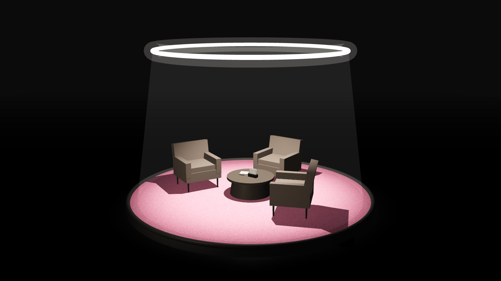
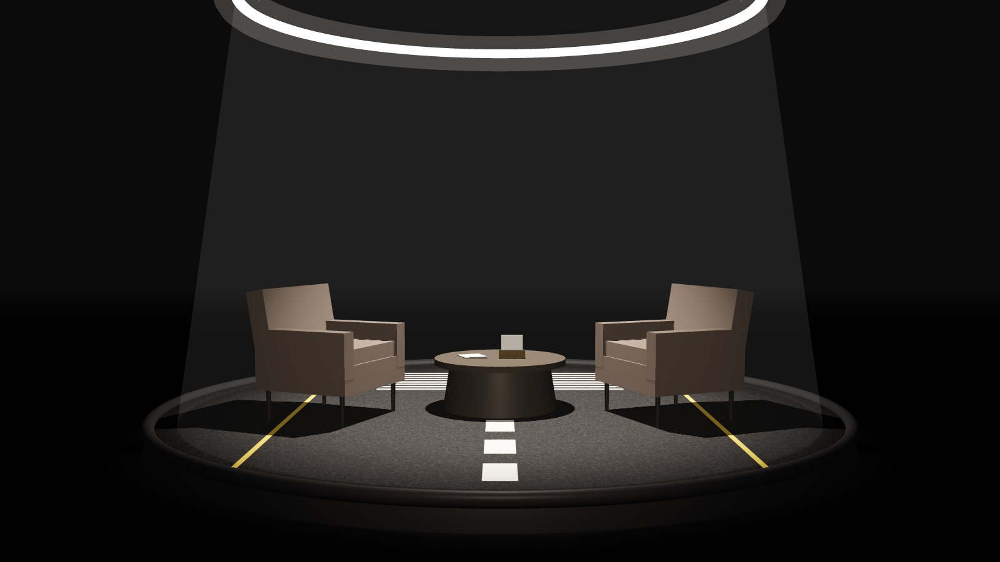
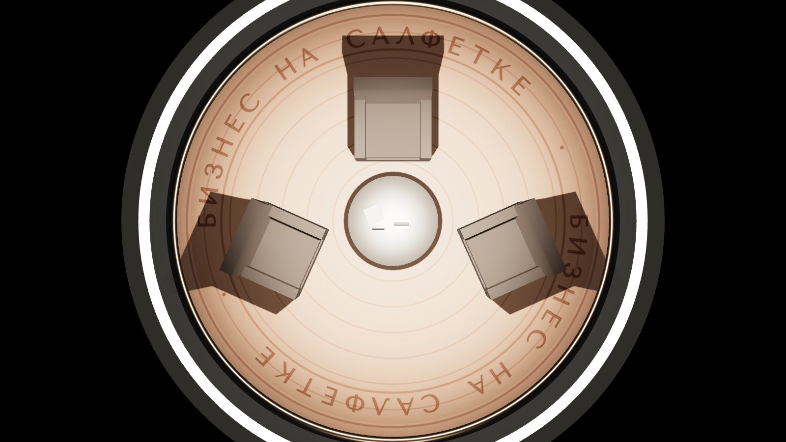
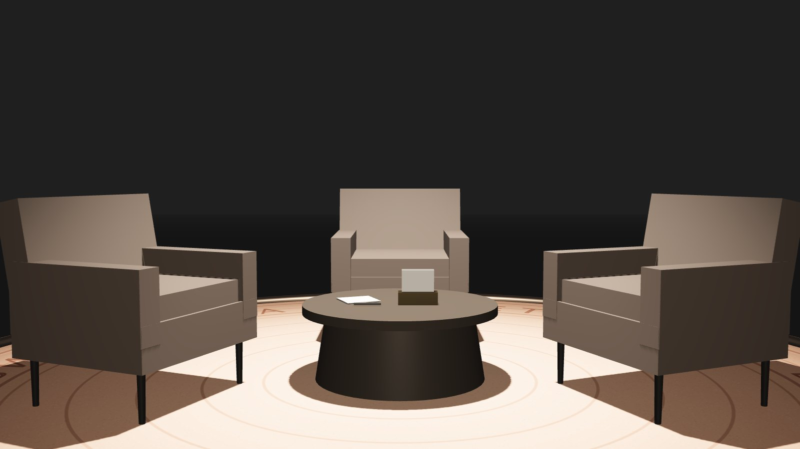

Кольцо
Кольцо света над круглым подиумом. Зал черный, свет падает только на собеседников. Подиум под ними каждый раз превращается в мир гостя.
Переключайте гостей сверху и число кресел внизу. Схему можно вращать. Белые точки отмечают элементы сета, синие камеры.
Свет решает, где главное. Подиум решает, чей это мир.
В центре темного павильона стоит круглый подиум диаметром около 5,5 метра. На нем кресла и журнальный столик. Над подиумом висит световое кольцо, главный источник света в зале. Свет падает на собеседников, павильон вокруг уходит в черноту.
Покрытие подиума меняется под каждого гостя. Для Frambini это розовый ковер, для Пулково асфальт взлетной полосы с разметкой, для Simple Wine паркет из винной клепки. Зритель с первого кадра понимает, в чей мир он попал.
Прием опирается на классику кино. Художник Кен Адам поставил стол под кольцо света в «Докторе Стрейнджлаве» Кубрика, этот сет до сих пор называют одним из лучших в истории. Шоу Чарли Роуза 26 лет держалось на черном пространстве и одном столе.
Видно с дивана
Подиум в пятне света читается с трех метров. Каждый новый выпуск зритель узнает по силуэту кольца.
700 млн часов подкастов на ТВ за месяцКаждый выпуск свой
Сменное покрытие дает новую картинку без новой декорации. Превью выпусков отличаются, но остаются одной серией.
Форма постоянна, деталь меняетсяКадр сверху
Вид сверху на подиум работает как готовая обложка и вертикаль для shorts.
69% приходят через короткие роликиНомера совпадают с точками на 3D схеме.
Световое кольцо
Около 4 м в диаметре, теплый свет 3200К, висит на высоте 3,5 м.
Сменный подиум
Круглая платформа 5,5 м и высотой 18 см. Покрытие собирается из сменных секторов.
Столик и салфетница
Низкий круглый столик, на нем латунная салфетница шоу.
Кресла
Два кресла развернуты друг к другу и к камере. Третье стоит у дальнего края, когда гостей двое.
Черный пол
Полированное покрытие вокруг подиума отражает кольцо и дает залу глубину.
Камеры
A общий план, B и C крупные планы, D сверху над столиком, E вертикаль для shorts.
Кольцо загорается
Зал темный, слышен щелчок и низкий гул. Кольцо зажигается, гость произносит главную фразу выпуска.
Разговор
Михаил и гость в креслах. Камеры A, B и C ведут беседу.
Запись на салфетке
Михаил записывает ключевую цифру, камера D показывает ее сверху, на экране цифра повторяется почерком.
Три фактора
Гость пишет три фактора успеха и подписывает салфетку. Кольцо гаснет.
Один подиум, разные миры.


Выпуск с Катей Голден: подиум пудреница.

Кольцевая лампа
Кольцо над подиумом зритель читает как инструмент блогера и бьюти индустрии. Мир Кати в масштабе зала.
Пудреница
Покрытие подиума повторяет прессованную пудру в нюдовом тоне, обод цвета розового золота. По краю выдавлено название шоу, в центре гладкая прессованная пудра.
Три кресла
Третье кресло для Стаса, если Катя придет с мужем.
Кадр сверху
Кресла внутри раскрытой пудреницы. Готовая обложка выпуска.
Графика рождается из света кольца и почерка на салфетке.
Заголовки глав и обложки. Широкие округлые буквы повторяют форму кольца.
Плашки, роли, субтитры. Спокойный гротеск, хорошо читается на телевизоре.
Только цифры. Почерк повторяет запись Михаила на салфетке.
Цвет гостя живет только на подиуме. Графика всегда остается в цветах света.

Плашка гостя. Кольцо прорисовывается, имя выезжает следом. Без подложки, только свет и текст.
Глава. Название темы внутри светового кольца, появляется при смене блока.
Цифра. Почерком, как на салфетке, с подчеркиванием от руки. Пример из описания выпуска с главой «Рольфа».
ГОЛДЕН
Обложка. Подиум гостя, крупное имя и короткая фраза почерком. Фразу берем из записанного выпуска.
Звуковой логотип
Щелчок включения и низкий гул лампы. Звучит на старте, при смене глав и в финале, когда кольцо гаснет.
Голос
Низкий плотный голос и короткие фразы с цифрой. Либо сам Михаил после сессии с режиссером озвучки.
Субтитры
Onest, белый, нижняя треть кадра, без обводки. Появляются там, где без них теряется смысл.
Как «Кольцо» закрывает шесть слабых мест.
Подиум под гостя переносит его мир в студию. Розовый ковер Frambini, асфальт Пулково, пудреница Кати Голден.
Три шрифта с четкими ролями: Unbounded для глав и обложек, Onest для плашек и субтитров, Caveat только для цифр.
Вся графика строится из двух образов шоу: линии светового кольца и почерка на салфетке. Логотип гостя живет на подиуме, графика его не дублирует.
Плотный низкий голос и звуковой логотип с гулом кольца задают статус гостя до первой фразы.
Выпуск открывается в темноте: щелчок, кольцо загорается, гость говорит главную фразу. Восемь секунд до названия.
Каждое превью строится по одной схеме: подиум гостя, кольцо, имя шрифтом Unbounded и фраза почерком. Лента складывается в серию.
Черный зал на общем плане может выглядеть пустым.
Полированный пол отражает кольцо, легкая дымка делает свет объемным конусом, сменный подиум заполняет нижнюю половину кадра.